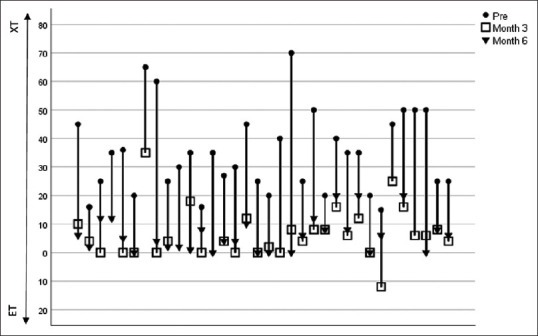
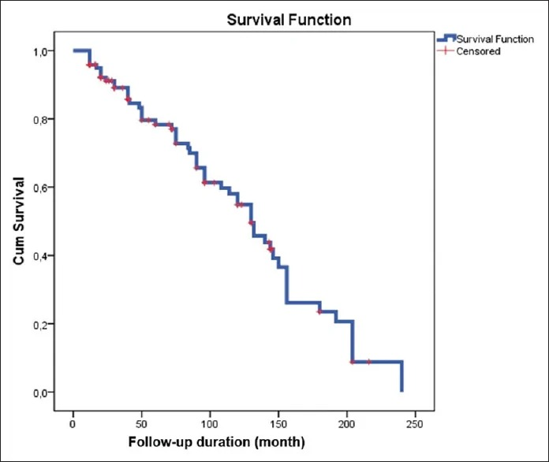
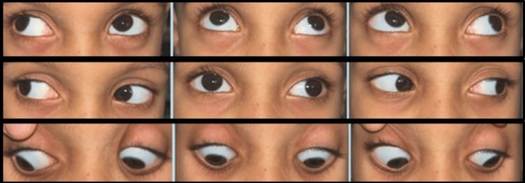

1405 — Lác ngoài thứ phát sau mổ lác trong: nhận diện, over-minus, khi nào mổ lại và chọn cơ / Consecutive exotropia after esotropia surgery: recognition, over-minus, reoperation timing and muscle choice
Tags: pattern:lac pattern:lac-ngoai pattern:lac-thu-phat vung:mat anatomy:co-van-nhan protocol:do-goc-lac score:goc-lac-PD
Mức chắc chắn (certainty): tổng hợp y văn (literature synthesis) — tự biên từ 1 tổng quan can thiệp 30 ca (PMC8772490), 1 phân tích sống còn 121 trẻ lác trong sơ sinh sau lùi cơ trực trong hai bên (PMC13524386), 2 nghiên cứu lác ngoài thứ phát "tự phát" ở trẻ viễn thị điều chỉnh kính (PMC11866981, PMC13431220), 1 nghiên cứu yếu tố nguy cơ (PMC10325677), 2 nghiên cứu kết quả mổ (PMC10024867, PMC9392484), 1 đoàn hệ trẻ bại não (PMC13511224) và 1 tổng quan hệ thống can thiệp lác ngoài trẻ em (PMC13245429). Chưa gắn một ca nguyên văn đơn lẻ.
Bài này nối tiếp 486 – Lác trong điều tiết theo dõi sau kính (P5 "quá chỉnh/tái phát" chỉ mới nêu một dòng), 485 – Khúc xạ lý liệt (đo và kê kính) và 472 – Phẫu thuật lác ở trẻ sinh non/ROP (kỹ thuật mổ, tái mổ). 486 dạy theo dõi sau khi đeo kính; bài này trả lời câu hỏi còn trống: khi mắt đã "quá chỉnh" thành lác ngoài thì đây là biến chứng gì, có phải luôn do mổ tay quá không, over-minus có cơ sở không, chờ bao lâu và mổ cơ nào.
Câu chốt: Lác ngoài thứ phát (consecutive exotropia — CXT) không phải một biến cố, mà là một quá trình trôi dần theo năm: sau lùi cơ trực trong (medial rectus — MR) hai bên ở lác trong sơ sinh, thành công động học 95,9% ở 1 năm chỉ còn 54,9% ở 10 năm, trung vị 130 tháng, và 14,0% quá chỉnh ở lần khám cuối (PMC13524386). Vì vậy câu hỏi đúng không phải "mổ có sai không" mà là "trôi bao nhiêu, trôi vì cơ hay vì khúc xạ, và đã đủ 6 tháng ổn định chưa".
1. Tổng quan bệnh học – cơ chế hình ảnh
- Định nghĩa: CXT = lác ngoài (exodeviation) xuất hiện sau khi đã quá chỉnh một lác trong (esodeviation) — thường được tính khi ≥ 6 tháng sau mổ lác trong và góc > 15 PD (tiêu chuẩn nhập của PMC8772490). Tỷ lệ trong y văn 4% – 29%, dao động lớn vì khác định nghĩa (góc nào, mốc thời gian nào, có tính lác ngoài "tự phát" không).
- Hai thể khác hẳn nhau về cơ chế — đừng gộp:
- CXT sau mổ (postoperative CXT) — hậu quả của lùi MR quá tay và/hoặc sẹo giãn dần ở vị trí khâu gân: mô sẹo thay gân chắc bằng tổ chức xơ mỏng, MR yếu dần theo năm, kèm hạn chế khép (adduction limitation) và yếu quy tụ (convergence weakness).
- CXT "tự phát" (spontaneous CXT) — trẻ lác trong điều tiết đeo kính viễn thị đủ độ, không mổ, vẫn chuyển thành lác ngoài sau 7,53 ± 1,49 năm (PMC11866981) hoặc 6,40 ± 3,50 năm sau khi chỉnh viễn thị (PMC13431220). Cơ chế: viễn thị giảm theo tuổi (nhãn cầu dài ra) trong khi kính vẫn giữ độ cũ → quy tụ do điều tiết giảm → mất cân bằng, cộng thêm AC/A thấp hơn có ý nghĩa ở nhóm chuyển thành lác ngoài (P ≤ 0,001) và điểm quy tụ gần xa (remote NPC) 27,2% vs 0% (P = 0,03).
- Bốn yếu tố nguy cơ đã lượng hóa:
- Liều lùi MR: lùi ≥ 6 mm là yếu tố độc lập dự báo thất bại (P = 0,022); góc lệch ban đầu lớn (P = 0,035) và giới nam (P = 0,009) cũng vậy (PMC13524386, Cox).
- Mất chức năng hai mắt: nhóm không có dung hợp (fusion) có nguy cơ CXT cao (P < 0,001), không có lập thể (stereoacuity) P = 0,029; ngược lại 97,44% (38/39) trẻ không bị CXT vẫn còn dung hợp (PMC10325677).
- Lệch dọc kèm theo (vertical deviation): P = 0,001 — dấu hiệu mất cân bằng cơ theo trục thứ hai.
- Viễn thị ban đầu cao (P = 0,01 mắt phải / 0,04 mắt trái) và tăng hoạt cơ chéo dưới (inferior oblique overaction) P = 0,03 (PMC11866981).
- TẠI SAO hình ảnh học gần như không đo được bệnh này: góc lác là đại lượng quang học, không phải đậm độ mô. 1 PD (prism diopter) = dịch chuyển 1 cm trên bia ở 1 m; cùng một mắt có thể đo góc xa khác góc gần vì trạng thái điều tiết khác nhau, và góc thay đổi theo hướng nhìn. CT/MRI không "thấy" lác; chúng chỉ trả lời câu hỏi cơ học khi nghi ngờ: cơ có còn nằm trên nhãn cầu không (lost/slipped muscle), đường đi cơ có bị dính vào thành hốc mắt/vật liệu ghép không, cơ có teo không. Với câu hỏi đó, MRI hốc mắt T1 fat-sat sau tiêm + T2 fat-sat, lát ≤ 1 mm mới là protocol (mục 4); CT chỉ dùng khi có chống chỉ định MRI hoặc cần xương.
- Vì sao "quá chỉnh" không đồng nghĩa "mổ hỏng": trong đoàn hệ 121 trẻ, 33,1% còn lác trong (under-corrected) và 14,0% quá chỉnh ở lần khám cuối; quá chỉnh tăng có ý nghĩa theo thời gian theo dõi (P = 0,001) — nghĩa là cùng một liều mổ, thời gian càng dài càng lộ ra trôi. Đây là lý do phải hẹn khám dài hạn chứ không phải "5 năm ổn là xong".
2. Mẫu hình + chẩn đoán phân biệt theo "thời điểm xuất hiện lác ngoài" (gamut)
Cùng một hình ảnh "mắt lác ra ngoài", nhưng mốc thời gian quyết định gamut:
- P1 — Ngay sau mổ (0–2 tuần): tụt/trượt cơ (slipped muscle), mất cơ (lost muscle) khi phẫu tích, lùi quá liều ngay, đo sai góc trước mổ, máu tụ hốc mắt. Đây là biến cố kỹ thuật, xử trí khác hoàn toàn CXT muộn.
- P2 — Muộn (≥ 6 tháng, thường 2–10 năm): sẹo giãn ở chỗ khâu → MR yếu dần, hạn chế khép, góc tăng dần. Đây là thể chiếm phần lớn và là chủ đề bài này.
- P3 — "Tự phát" ở trẻ lác trong điều tiết đang đeo kính: viễn thị giảm theo tuổi, AC/A thấp, NPC xa dần (mục 1).
- P4 — Lác ngoài ở trẻ có bệnh thần kinh (bại não, chậm phát triển): đồng hành (comitant), ductions đầy đủ, dung hợp kém; ở 73 trẻ bại não, CXT chỉ xuất hiện ở nhóm mổ vì lác trong: 39,1% vs 0% (P = 0,001) (PMC13511224).
- P5 — Lác ngoài KHÔNG đồng nhất (incomitant): góc khác nhau theo hướng nhìn, có hạn chế cơ học hoặc liệt thần kinh (VI, cơ học do chấn thương, bệnh cơ hốc mắt) → đây là nhóm bắt buộc chụp MRI.
Gamut theo trạng thái khép (adduction) — câu hỏi thứ hai sau khi đã xác định CXT:
- Có hạn chế khép (MR underaction) → cơ chế cơ, hướng tới đưa MR ra trước (advancement) ± cắt ngắn, có thể kèm lùi cơ trực ngoài (LR) nếu góc lớn.
- Khép đầy đủ, góc nhỏ → nghiêng về thành phần khúc xạ/điều tiết → thử over-minus (mục 4) trước khi nghĩ tới mổ.
- Khép đầy đủ nhưng góc rất lớn → CXT thể hỗn hợp; dữ liệu cho thấy MR một bên đưa ra trước + lùi LR cùng bên tốt hơn đưa MR hai bên ra trước ở góc ~56 PD (73,33% vs 52,63%, p = 0,22 — chưa đủ lực để kết luận).
3. Bảng so sánh phân biệt (ma trận đối chiếu)
| Thực thể (entity) | Hình ảnh / dấu hiệu điển hình | Chốt vào (rule-in) | Chốt loại (rule-out) | Gợi ý xác nhận |
|---|---|---|---|---|
| CXT muộn sau lùi MR | Góc ngoài tăng dần theo năm; hạn chế khép nhẹ–vừa; sẹo kết mạc ở vị trí khâu cũ | Tiền sử mổ lác trong + góc ngoài ≥ 15 PD sau ≥ 6 tháng + khép yếu | Góc xuất hiện trong 48 giờ đầu → nghi tụt/mất cơ, không phải thể muộn | Đo góc xa/gần + ductions + MRI T1 fat-sat sau tiêm nếu khép hạn chế nhiều |
| Tụt/mất cơ MR (slipped/lost) | Góc ngoài lớn, đột ngột ngay sau mổ; khép hạn chế nặng (−3 đến −4) | Xuất hiện ≤ 2 tuần sau mổ + khép hạn chế nặng | Xuất hiện sau nhiều tháng → không phải tụt cơ cấp | MRI hốc mắt: không thấy bóng cơ MR trên nhãn cầu + forced duction test (FDT) |
| Lùi MR quá liều, không yếu cơ | Góc ngoài ổn định sớm rồi đứng yên; khép đầy đủ | Khép đầy đủ + góc hằng định từ tuần thứ 2 | Khép yếu tiến triển → sẹo giãn | Đo góc 3 lần cách 2 tuần; đối chiếu liều mổ đã dùng |
| CXT tự phát ở lác trong điều tiết | Không có tiền sử mổ; đang đeo kính viễn thị; AC/A thấp, NPC xa | Tiền sử chỉ đeo kính + chuyển lác sau 6–8 năm + AC/A thấp | Có tiền sử mổ → CXT sau mổ | So khúc xạ lý liệt hiện tại với độ kính đang đeo |
| Lác ngoài cảm giác (sensory XT) | Mắt giảm thị lực nặng/mù lác ra ngoài; thường góc lớn, ổn định | Thị lực mắt lác rất kém + không có tiềm năng dung hợp | Hai mắt thị lực tốt → không phải cảm giác | Khúc xạ lý liệt + đáy mắt + OCT/ERG nếu cần |
| Lác ngoài ở trẻ bại não/chậm phát triển | Đồng hành, ductions đầy đủ, thường kèm lệch dọc/DVD | Bệnh thần kinh + góc đồng hành + ductions đầy đủ | Góc không đồng nhất + đau → tìm nguyên nhân hốc mắt | Đo góc ở 5 hướng nhìn; không cần chụp nếu đồng hành điển hình |
| Lác ngoài gián đoạn (intermittent XT) bị chẩn nhầm | Lúc thẳng lúc lác; cover test 30–45 phút làm lộ góc | Có lúc thẳng hoàn toàn + góc tăng sau che mắt | Lác hằng định mọi lúc → không phải gián đoạn | Prolonged cover test trước khi kết luận góc thật |
| Hội chứng Duane thể lác trong đã mổ | Hẹp khe mi khi khép, co rút nhãn cầu; sau lùi MR có thể lác ngoài | Hẹp khe mi + co rút khi khép | Không có dấu hiệu co rút → không phải Duane | Đo khe mi khi khép; MRI nếu cần phân loại |

*Mỗi cột là một bệnh nhân: tròn đen = trước mổ (XT), vuông rỗng = tháng 3, tam giác đen = tháng 6. Đường nối cho thấy phần lớn ca về gần 0 PD ở tháng 3 rồi trôi ngược ra ngoài ở tháng 6 — chính là "exodrift" làm thành công giảm từ 93% (tuần 1) xuống 73% (tháng 6). Nguồn: Rajavi Z et al., J Curr Ophthalmol 2022 (PMC8772490) Fig. 1, CC BY-NC-SA 4.0, giữ nguyên bản.*4. Protocol đo – theo dõi – can thiệp + ngưỡng quyết định
4.1 Đo góc (làm đủ 6 bước, không rút gọn)
- Khúc xạ lý liệt trước (cyclopentolate 1%, xem bài 485) — vì độ viễn thị đang đeo có thể đã sai sau nhiều năm.
- Đo góc xa (6 m) và gần (33 cm) bằng prism alternate cover test; trẻ khó hợp tác → Krimsky (đặt lăng kính trước mắt đang nhìn).
- Prolonged cover test 30–45 phút khi nghi lác ngoài gián đoạn — góc thật chỉ lộ sau khi phá dung hợp.
- Đo ductions/versions 6 hướng, ghi hạn chế khép theo thang 0 đến −4.
- Forced duction test (FDT) khi vào mổ: FDT âm (cơ di động tự do) mới cho phép đưa MR ra trước; FDT dương → có dính, phải xử lý sẹo trước.
- Chức năng hai mắt: Titmus/Worth 4-dot, ghi trung tâm (< 100 giây cung) / ngoại vi (100–3000) / ức chế (> 3000).
4.2 Ngưỡng quyết định (theo thứ tự)
| Bước | Ngưỡng | Hành động | Nguồn |
|---|---|---|---|
| Xác định CXT | > 15 PD và ≥ 6 tháng sau mổ lác trong | Đủ tiêu chuẩn can thiệp | PMC8772490 |
| Thử nội khoa | Góc ≤ 20 PD, khép đầy đủ, còn dung hợp | Over-minus thử 8–12 tuần (giảm +0,50 đến +1,00 D mỗi lần, không quá −2,00 D tương đối) + theo dõi cận thị | PMC13245429 (gián tiếp) |
| Chỉ định mổ | Góc > 15–20 PD hoặc > 10 PD kèm dung hợp kém, thất bại nội khoa | Mổ | PMC8772490, PMC10024867 |
| Liều MR | 1 mm MR advancement ≈ 3,5 PD (giả định phẫu thuật); thực đo 4,7 ± 3,3 PD ở tháng 3 | Tính liều rồi giảm 10–15% nếu góc gần > góc xa | PMC8772490 |
| Góc rất lớn (~56 PD) | Cân nhắc MR một bên + lùi LR cùng bên thay vì MR hai bên | Thành công 73,33% vs 52,63% (p = 0,22 — chưa đủ lực) | PMC9392484 |
| Đích thành công | ≤ 10 PD ở xa (và gần) | Đánh giá lại ở 6 tháng, không sớm hơn | PMC10024867, PMC8772490 |
Về over-minus — nói đúng mức bằng chứng: over-minus (kê kém dương/thiên cận hơn khúc xạ lý liệt để "kéo" điều tiết–quy tụ) được dùng rộng rãi, và trong tổng quan 34 nghiên cứu/3.643 trẻ lác ngoài, over-minus đạt thành công 80,63% sau 2,15 năm — nhưng góc thường quay lại như cũ khi bỏ kính over-minus và cần theo dõi tiến triển cận thị (PMC13245429). Chưa có RCT riêng cho CXT sau mổ → dùng như bắc cầu 8–12 tuần, không phải điều trị triệt để, và không áp dụng khi khép đã hạn chế (cơ đã yếu thì giảm dương chỉ làm mờ thêm).
4.3 Lưu đồ quyết định
flowchart TD
A[Lác ngoài sau mổ lác trong] --> B{Xuất hiện ≤ 2 tuần sau mổ?}
B -->|Có| C[FDT + MRI hốc mắt T1 fat-sat sau tiêm]
C --> D{Khép hạn chế −3 đến −4 + không thấy bóng cơ?}
D -->|Có| E[Tụt/mất cơ MR → mổ lại sớm tìm cơ]
D -->|Không| F[Theo dõi 6 tháng trước khi quyết định]
B -->|Không| G[Đo góc xa và gần + ductions + khúc xạ lý liệt lại]
G --> H{Khép đầy đủ và góc ≤ 20 PD?}
H -->|Có| I[Over-minus 8–12 tuần + theo dõi cận thị]
I --> J{Còn > 10 PD sau 12 tuần?}
J -->|Không| K[Tiếp tục kính + theo dõi 6 tháng]
J -->|Có| L[Mổ: MR advancement ± lùi LR]
H -->|Không| M[Đưa MR ra trước theo liều 3,5 PD mỗi mm]
M --> N{Đích ≤ 10 PD ở 6 tháng}
N -->|Không| O[Đo lại + cân nhắc mổ lần 2 sau 6 tháng]
4.4 Theo dõi dài hạn (đây là phần hay bị bỏ)
- Sau mổ lác trong sơ sinh: khám 3 tháng, 6 tháng, 12 tháng, sau đó hằng năm tới hết tuổi thiếu niên — vì quá chỉnh tăng theo thời gian theo dõi và thành công động học rơi từ 95,9% (1 năm) xuống 54,9% (10 năm) (PMC13524386).
- Trẻ lác trong điều tiết đeo kính (không mổ): đo lại khúc xạ lý liệt mỗi 6–12 tháng; cảnh báo gia đình nguy cơ chuyển lác ngoài sau 6–8 năm, đặc biệt nếu viễn thị ban đầu cao hoặc có tăng hoạt cơ chéo dưới (PMC11866981).
- Sau mổ CXT: 6 tháng là mốc đánh giá, vì exodrift chủ yếu xảy ra trong 3 tháng đầu rồi chậm lại nhưng không dừng (PMC8772490).
5. Biến thể bình thường và cạm bẫy
- Giả lác ngoài (pseudoexotropia): khoảng cách đồng tử rộng, góc kappa dương, lồi mắt; Hirschberg đọc "ngoài" nhưng cover test thấy thẳng → cover test là chốt, không phải ánh đồng tử.
- DVD (dissociated vertical deviation) giả lác ngoài: mắt "trôi lên và ra" khi bị che; nếu chỉ đo bằng Hirschberg sẽ ghi nhầm lác ngoài. Che–bỏ che luân phiên phân biệt: DVD lên khi che, không phải ra.
- Đo góc gần khi trẻ đang điều tiết: không thêm +3,00 D vào kính khi đo gần sẽ đo thiếu lác ngoài ở gần (trẻ quy tụ bù). Ngược lại, đo xa mà trẻ không đeo kính đủ độ sẽ đo thừa.
- Krimsky ở trẻ khó hợp tác: sai số ±5–10 PD; không dùng Krimsky để quyết định liều mổ nếu có thể đo lăng kính.
- Bỏ sót lệch dọc (satisfaction of search): đã thấy lác ngoài là dừng; nhưng lệch dọc là yếu tố nguy cơ CXT (P = 0,001) và ảnh hưởng liều mổ — phải đo cả trục đứng và xoắn.
- Over-minus ở trẻ còn tiềm năng dung hợp: over-minus làm mờ và có thể đẩy nhanh cận thị; chỉ dùng ngắn hạn có mốc đánh giá, không dùng như "kính đeo lâu dài".
- "Đã mổ 1 lần rồi thì không mổ lại được": sai — nhưng mổ lại sau 6 tháng ổn định, và kết quả mổ CXT thấp hơn mổ lác nguyên phát (48–72% trong y văn; 80,6% ở một loạt 59 ca) → phải tư vấn trước.
- Chụp MRI tràn lan cho mọi CXT: chỉ định hẹp (mục 2, P1/P5). CXT đồng hành điển hình với khép đầy đủ không cần chụp; chụp thừa không đổi quyết định và với trẻ nhỏ thường phải gây mê.
6. Tự lượng giá — Blind Quiz ngay trên trang tĩnh
Ca 1 — trôi dần theo năm sau mổ lác trong sơ sinh

- Gợi ý lâm sàng: trẻ lác trong sơ sinh, mổ lùi cơ trực trong hai bên lúc 24 tháng, mẹ hỏi "mổ xong có ổn mãi không?".
- Câu hỏi: Đường cong này nói gì về bản chất của "thành công" trong mổ lác? Trung vị thành công là bao nhiêu tháng, và tỉ lệ quá chỉnh ở lần khám cuối?
Bấm để hiện đáp án (findings + chẩn đoán)
- Findings: Kaplan–Meier giảm đơn điệu từ 1,0 xuống ~0,05 ở ~240 tháng; các vạch đỏ là ca bị cắt cụt (censored).
- Số liệu: thành công động học 95,9% ở 1 năm → 54,9% ở 10 năm, trung vị 130 tháng; ở lần khám cuối 33,1% còn lác trong, 14,0% quá chỉnh, quá chỉnh tăng theo thời gian theo dõi (P = 0,001) (n = 121, theo dõi 77,8 ± 59,6 tháng).
- Chẩn đoán: "thành công" của mổ lác là trạng thái động, phải hẹn khám dài hạn; không hứa "mổ một lần là xong".
- Nguồn ảnh: Güvenç U et al., Children (Basel) 2026 (PMC13524386) Fig. 1, CC BY 4.0, giữ nguyên bản.
Ca 2 — mắt lác ra ngoài 45 PD ở trẻ chậm phát triển, ductions đầy đủ

- Gợi ý lâm sàng: bé gái 5 tuổi, chậm phát triển toàn thể; người nhà thấy mắt "lệch ra ngoài" từ lâu, không đau, không sụp mi.
- Câu hỏi: Đây có phải lác ngoài thứ phát sau mổ không? Ba dấu hiệu nào trên 9 hướng nhìn giúp loại tụt/mất cơ và bệnh cơ hốc mắt? Có cần MRI không?
Bấm để hiện đáp án (findings + chẩn đoán)
- Findings: lác ngoài đồng hành ~45 PD, đầy đủ mọi hướng nhìn, không hạn chế khép, không co rút nhãn cầu.
- Chẩn đoán: lác ngoài đồng hành ở trẻ chậm phát triển — không phải CXT sau mổ (không tiền sử mổ), không phải tụt cơ (khép đầy đủ), không phải bệnh cơ hốc mắt (không đau, không hạn chế vận nhãn).
- Vì sao không cần MRI: hình ảnh đồng hành + ductions đầy đủ + không đau không đòi hỏi chẩn đoán hình ảnh; MRI chỉ khi không đồng nhất, đau, sụp mi, hoặc nghi tụt cơ.
- Lưu ý phản biện: ca gốc là lác ngoài đồng hành ở trẻ chậm phát triển, không phải CXT; dùng ở đây để dạy cách loại trừ bằng ductions, không được trích làm bằng chứng cho CXT.
- Nguồn ảnh: Singh M et al., Cureus 2025 (PMC12640464) Fig. 1, CC BY 4.0, giữ nguyên bản.
Ca 3 — trẻ lác trong điều tiết đeo kính 8 năm, nay lác ra ngoài
- Gợi ý lâm sàng: bé gái 12 tuổi, lác trong điều tiết từ 22 tháng tuổi, chưa từng mổ, đeo kính +4,50 D từ 3 tuổi. Nay mắt lệch ra ngoài, mẹ nói "kính vẫn đeo đều".
- Câu hỏi: Cơ chế nào giải thích lác ngoài xuất hiện dù không mổ? Hai biến số đo được nào ủng hộ chẩn đoán, và việc đầu tiên phải làm trước khi nghĩ tới mổ?
Bấm để hiện đáp án (findings + chẩn đoán)
- Chẩn đoán: CXT tự phát (spontaneous CXT) ở lác trong điều tiết — không phải biến chứng phẫu thuật.
- Cơ chế: viễn thị giảm theo tuổi trong khi kính giữ độ cũ → quy tụ do điều tiết giảm; AC/A thấp hơn có ý nghĩa (P ≤ 0,001) và remote NPC 27,2% vs 0% (P = 0,03) là hai biến số ủng hộ (PMC13431220); khoảng cách lác trong → lác ngoài 7,53 ± 1,49 năm (PMC11866981) hoặc 6,40 ± 3,50 năm (PMC13431220).
- Việc đầu tiên: đo lại khúc xạ lý liệt và so với độ kính đang đeo; nếu viễn thị đã giảm, giảm độ kính theo khúc xạ mới rồi đo lại góc — nhiều ca chỉ cần bước này.
- Yếu tố nguy cơ cần nhớ: viễn thị ban đầu cao (P = 0,01/0,04) và tăng hoạt cơ chéo dưới (P = 0,03).
- Nguồn: PMC11866981, PMC13431220 (không kèm ảnh).
Bài liên quan chéo
- 486 – Lác trong điều tiết theo dõi sau kính (P5 "quá chỉnh/tái phát", lăng kính, ngưỡng mổ phần còn lại)
- 485 – Khúc xạ lý liệt điều tiết ở trẻ mầm non (đo và kê kính viễn thị)
- 472 – Phẫu thuật lác ở trẻ sinh non/ROP (kỹ thuật mổ, tái mổ)
- 469 – Lác & nhược thị ở trẻ sinh non/ROP (bịt mắt/atropine)
- 477 – Bệnh thị giác hai mắt (lập thể và dung hợp)
- 1412 – Đo khúc xạ lý liệt ở trẻ có nhu cầu đặc biệt (Down, bại não, tự kỷ — nhóm P4)
- 1413 – Tụt/mất cơ trực trong sau mổ lác: MRI/AS-OCT định vị, khi nào mổ lại (biến cố cấp tính 2 tuần đầu, khác sẹo giãn muộn)
Ảnh
- Ảnh lấy từ Europe PMC/PMC (bản open access), giữ nguyên bản, không crop/ghép (2/3 ảnh là CC BY-NC-SA/CC BY-NC-ND).
- Tên file:
1405_lac-ngoai-thu-phat_<nội dung>_PMC<ID>-Fig<k>.jpg; nguồn – giấy phép từng file trongimages/CREDITS.md.
Không dùng để chẩn đoán độc lập khi chưa có người hướng dẫn.